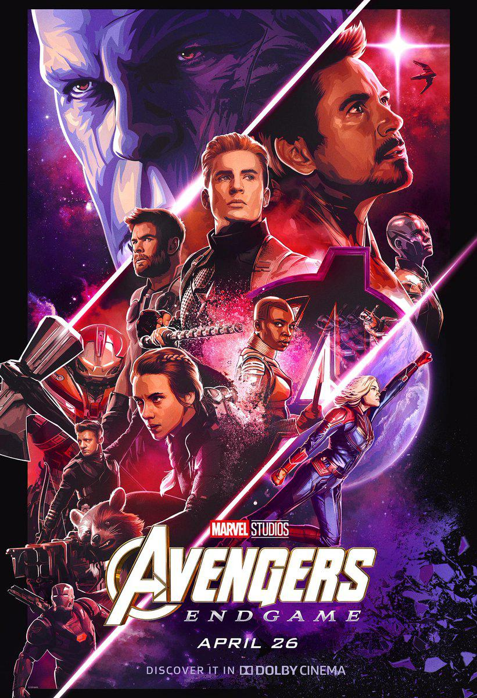
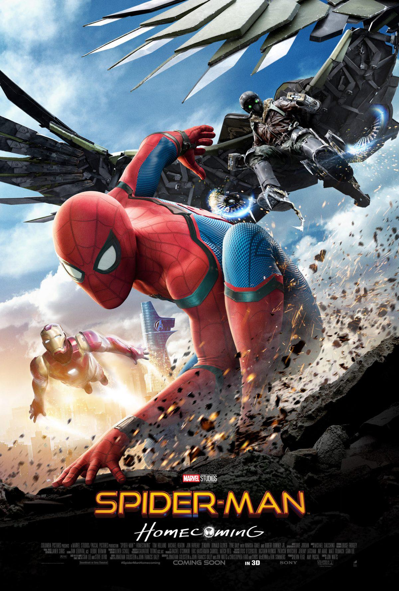

| Movie Cover |
Title |
Director |
Date released |
synopsis |
 |
Spider-Man:No Way Home |
Jon Watts |
December 17,2021 |
After Spider-Man was to be revealed as Peter Parker by Quentin Beck, he had an idea to tell Dr. Strange to help him make everyone forget that Peter Parker is Spider-Man but the spell goes wrong causing all of the villains from the Sam Raimi and The Amazing Spider-Man universe to enter the mcu Spider-Man universe. Later on in the movie the Spider-Mans from those universes also arrived into the mcu Spider-Man Universe to try and help our current Peter Parker to put them back in their original universe. |
|  |
Avengers: End Game |
Anthony Russo, Joe Russo |
April 24, 2019 |
When half of the population was snapped away by Thanos, The Avengers tried to do everything they can to try and bring back those people, some of them left and accepted what Thanos has done and some of them were trapped in space because of the previous movie, after 5 years of silence there was this one hero called Ant-Man said something about the Quantum Realm able to go back in time in a way to get the stones and use the gauntlet and someone to use it to bring them back. |
 |
Spider-Man: Homecoming |
Jon Watts |
July 7, 2017 |
This is the start of Peter Parker becoming a hero, and he wants to prove to Tony Stark(Iron Man) that he does not need training wheels anymore. |
 |
Spider-Man: Far From Home |
Jon Watts |
July 2, 2019 |
After the Iron Man has sacrificed himself to bring everyone back from the snap, with Iron Man gone, Peter is all alone to stop the threats of his city but Peter decided he needs a break but his aunt encourages Peter to bring his suit just in case anything happens which is what Peter wants to avoid. Threats won't leave Peter alone since he keeps getting called on missions and needs to stop resting and to save the world from ultimately getting destroyed. |
 |
Avengers: Infinity War |
Anthony Russo, Joe Russo |
April 25, 2018 |
A new threat has arrived and its a more serious matter than ever before, a being called Thanos has been announced to earth and that he will wipe out half of the worlds population and the Avengers do everything they can to stop this threat in order to save the earth once more, spoiler warning it does not end up in a happy ending. |